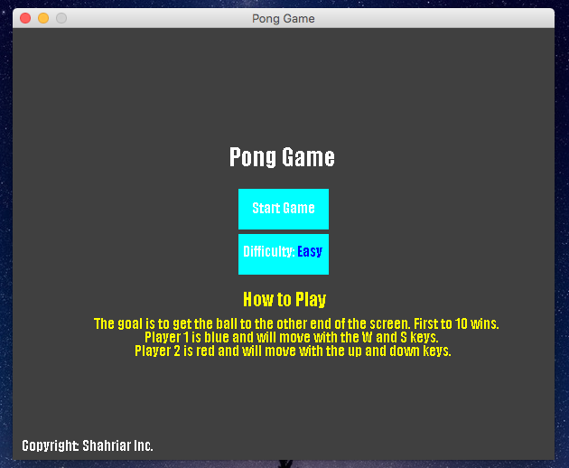
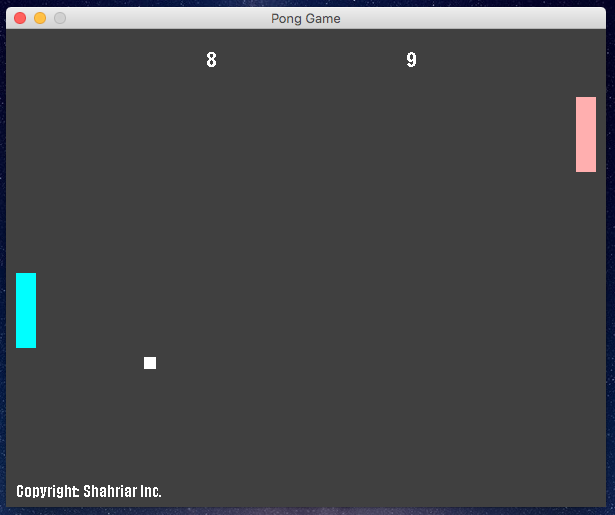
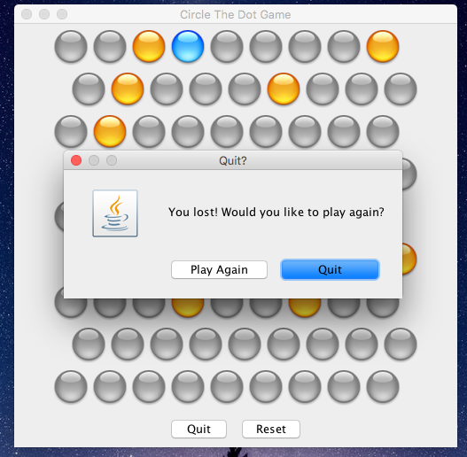

Zarif Shahriar
Developer. Entrepreneur. Engineer.
Engineering student with a mind for business and science focusing on using software to create platforms for future businesses and consumers to benefit from. Seeking to make a difference in the world by learning how to use powerful tools such as programming to create applications and technologies that can one day impact people positively.
About Me
Currently studying Software Engineering at the University of Ottawa going in my second year. Although software design and programming are key interests of mine, I've always found that my mind for business always shines brighter.
Ever since I was small I always dreamed of creating my own company, taking from icons such as Steve Jobs and Google co-founders Larry Page and Sergey Brin I always saw myself as starting something new, something different, and set out to achieve it. Enrolling in engineering was my primary choice since it would open up vast amounts of resources in programming and computer architecture, two fundamental topics in the software company I desired so much. While school taught me the theory, Youtube and online courses are where I went to learn the actual skills of programming and design. All of it came together to help me create my first company.
Closed Bracket, just a brand new start up that I made as a platform for future products and business ideas. If you're interested in web design or mobile application I welcome you to visit the company website to learn more about our future business ideas.
After all, I'm just getting started.
Projects and Works
As a software developer and student most of my projects have been done in school for either summatives or assignments. Some of which have been pretty fun to create and learn from. The first one I'll showcase would be the first game I made using programming. For my grade 12 summative I decided to recreate the iconic Pong game using Java and created a 2 player game with 2 difficulties, easy and hard. Through this project I was introduced to object oriented programming and realized how powerful it is. Some screen shots of the game are down below. You can also check the source code as well as actually play the game if you visit my GitHub.

Main menu for the Pong game

In game screen shot during two player mode
That was in high school, and since then I've learned a ton of Java and one of my favorite projects that I did was actually for my 1st year Computing course, where I was tasked to re-create Apples Puzzler game, and did so using the popular Model-View-Controller scheme. You can see some screen shots below and check out the code and the game on GitHub.

In game screen shot, winning isn't easy, trust me
Outside of school I've also done website development and web design, including this site. Completely designed using HTML,CSS and Javascript from scratch to showcase just another one of my works and skills in the field. Front end development is something I really enjoy but I am also well hearsed in back end development such as Oracle databases and MySQL along side PHP and more. To view my complete lists of skills and experience please check out my resume down below.
I am also creating websites and applications through my company Closed Bracket and do encourage you to visit the site to see more of my work.